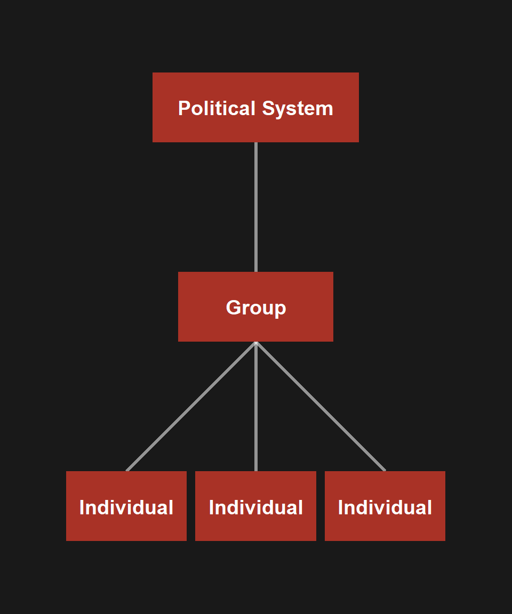
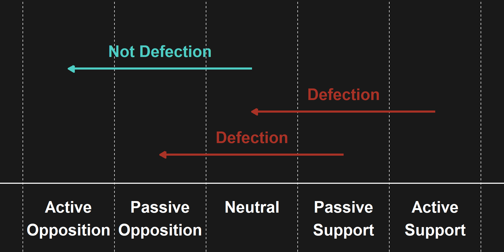
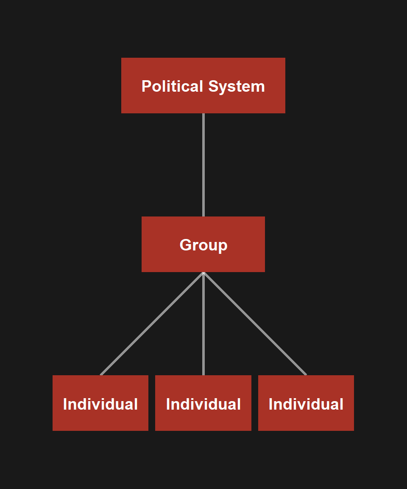
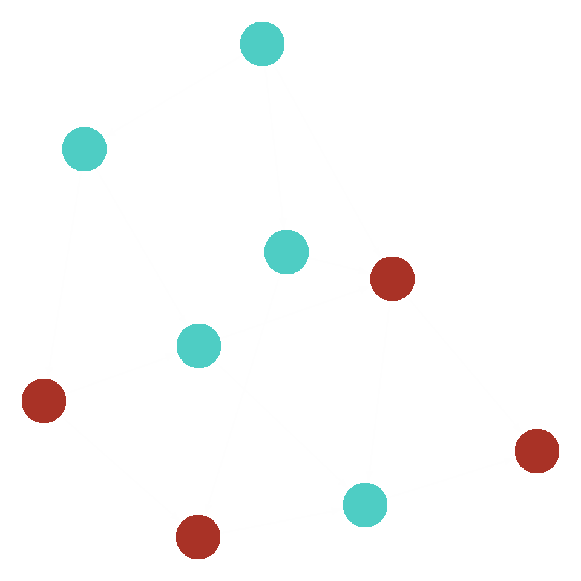
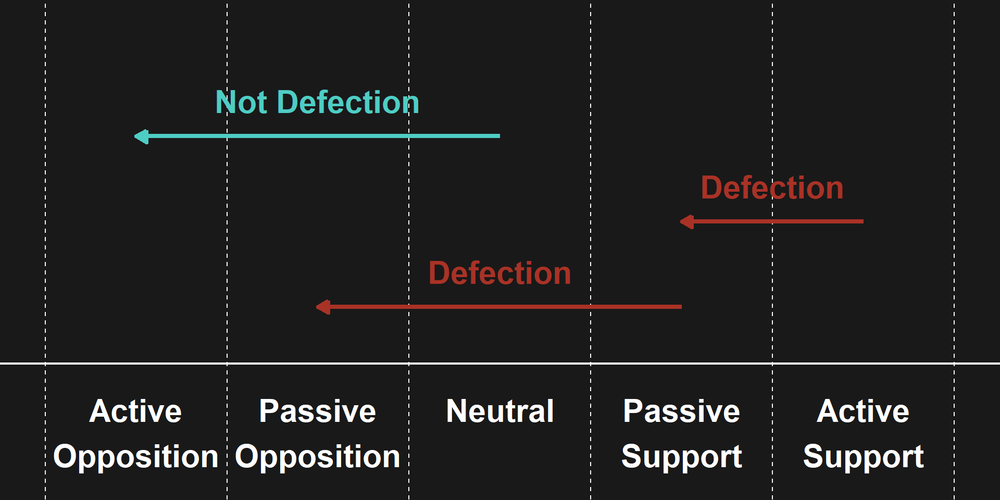

Why Do Regime Supporters Cease Their Support?
2026-02-20
When do supporters of authoritarian and democratic backsliding regimes cease to support their leaders? When do they defect?
Goal: Develop a framework to guide research and inform practitioners seeking to advance, defend, and repair democracy.
All political regimes rely on key groups and institutions to provide power and resources (Sharp 1973):
Defection is any instance in which a regime supporter substantively decreases their level of regime support.
Examples:
Defection is especially crucial in processes of nonviolent resistance, whose logic rests not on eliminating opponents but on shifting them to one’s side (Chenoweth and Stephan 2011).
Adapted from Oppenheimer and Lakey (1965):
This project focuses on defection within:
1. Authoritarian and democratic backsliding regimes
2. The contemporary world (post–Cold War)
Different forms of defection have been studied in isolation:
Guiding Assumptions
Meaningful research can be done at either level, and ideal research will incorporate both.

Understanding defection requires attention to:

People defect for many reasons — often simultaneously:
These motivations interact:
Key caution: Self-reported explanations are one data source among many, not definitive answers. People construct narratives to shape self and collective image (Nisbett and Wilson 1977).
| Breaking (exit/outside) | Binding (voice/inside) | |
|---|---|---|
| Speaking | Public condemnation | Private disapproval |
| Acting | Joining a demonstration | Creating internal reforms |
| Standing in the way | Disobeying orders | Foot-dragging |
Initial Propositions
Regime supporters typically won’t defect without perceiving an acceptable post-defection future.
Implication for resistance campaigns:
Defection is driven by social connections and a “logic of appropriateness” (March and Olsen 1998).
For resistance campaigns, defection is more likely when:
Social connections are important but likely insufficient. Defection in authoritarian contexts is high-risk, high-cost, thus may only occur when material costs of defection are lower than costs of loyalty.
Tension: Social vs. material logics of sparking defection
Example: A business supporting an authoritarian leader
Campaigns are likely to be effective when they sequence social and material strategies — material pressure may be most effective when seen as a temporary break in a relationship that can be restored.
Little steps are easier than big steps
But authoritarianism can make defection all-or-nothing
Hypothesis: Defection scale is directly related to degree of authoritarianism. More open → small, frequent defections. More authoritarian → rare but large and abrupt.
Discussion
Do the concepts and definitions in this framework illuminate the relevant phenomena?
In particular: is it helpful to lump together small moves and big moves?

What is gained and what is lost from thinking of defections in this high-level, unified way?
Some considerations:
Which assumptions are clear/unclear or helpful/unhelpful? Are there contradictions?
The five assumptions:
What additional assumptions are necessary to understand defections?
Some possible areas to explore:
Thank You!
Defections Project — Conceptual Framework